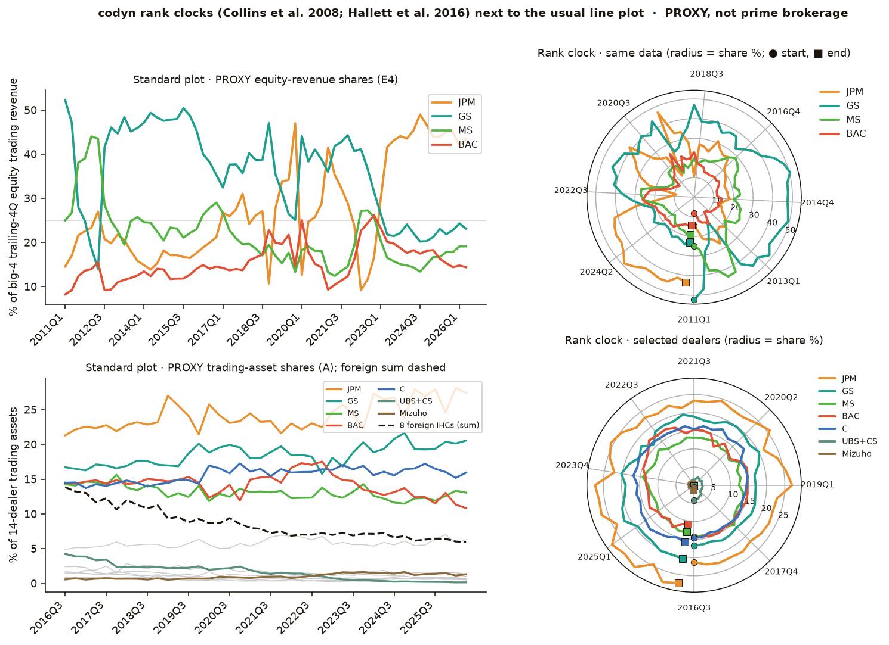
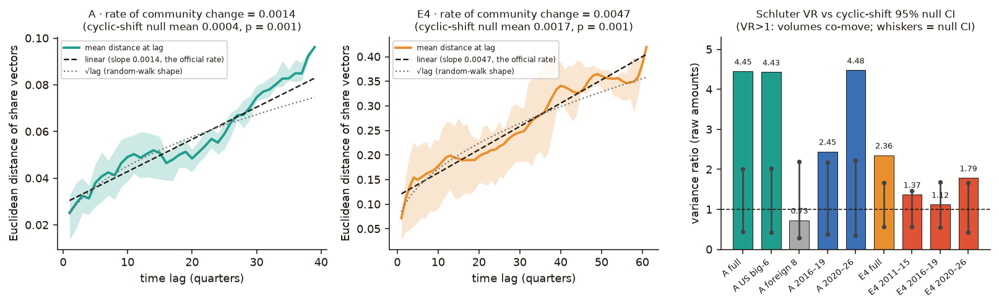
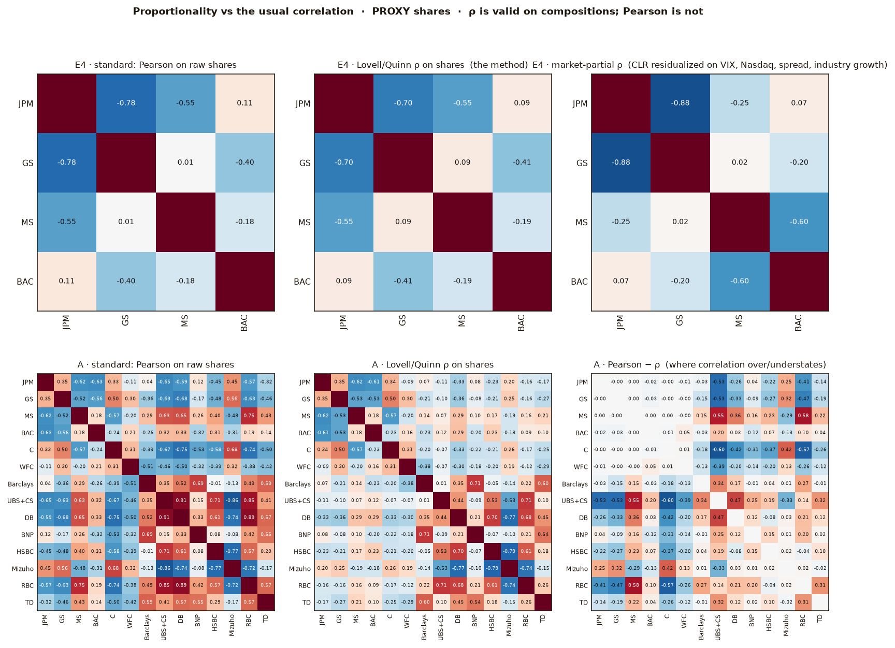
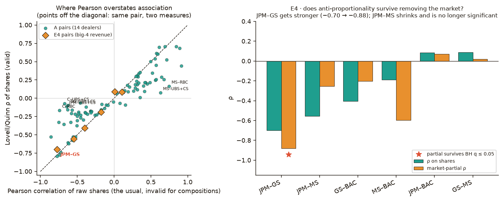

Thursday · November 12, 2026 · ad hoc edition · aimed at Q1 · exotic mandate
Methods scout
An ad hoc run, requested this morning: two methods carried over from other fields, both niche or obscure, aimed at whether a dealer’s share move is the market or a sticky migration. Run on the same clearly labelled PROXY panel as 11-11, because top-25 prime-broker data still isn’t in Drive. Forecasting stayed on the back burner.
● Exotic mandate: both picks from other fields — ecology (codyn) and compositional genomics (Lovell ρ)● Raw dealer volumes co-move: Schluter VR = 4.45 on 14-dealer trading assets vs a cyclic-shift null of 0.44–2.00● Foreign IHC volumes do not: VR = 0.73, inside the null (0.29–2.19)● JPM–GS equity-revenue ρ = −0.698 (BH q = 0.021); after removing the market it is −0.882 (q = 0.036)● JPM–MS anti-proportionality is the market’s: ρ goes from −0.554 to −0.253 and is no longer significant
The short version
This is an ad hoc edition, not the 2 PM daily run, asked for after Jared’s Managing Director said “you got to go more exotic to find the good stuff.” The bar we used is the MD’s own example: Davis King’s dlib blog post on MaxLIPO+TR (28 December 2017), building on Malherbe & Vayatis (2017, PMLR 70:2314–2323) — a practitioner write-up, a solid paper, an algorithm few people know that beats the usual choice and needs no tuning. MaxLIPO itself is on today’s watchlist, not a pick: it’s a global optimiser, and we didn’t have a natural non-forecasting use for it on this share panel. Forecasting stayed in the background; Jared’s framework is at v2.1 and has moved past MARSS-style state-space models.
Data first. Q1 is still about the top 25 prime brokers, and there is still no per-firm prime-brokerage data in Drive. Everything here uses the same PROXY as 11-11: public FR Y-9C filings, trading-asset shares of 14 dealers (2016Q3–2026Q2) and equity trading revenue shares of JPM, GS, MS and BAC (2011Q1–2026Q2). Neither is prime brokerage. The run is descriptive and runs none of the pre-registered Y-9C trading-OT forecasts, though it does look at 2014–2026 data inside that study’s held-out window.
codyn (community-dynamics metrics and rank clocks, from ecology; Methods in Ecology and Evolution 2016) recommend for promote workflow. Treat dealers as species and quarters as samples. Rank clocks — a polar plot from plant-community ecology — make the GS→JPM equity-revenue swap and the UBS+CS collapse obvious in a way the usual line plot does not. On raw amounts, the Schluter variance ratio (with the package’s own cyclic-shift null, which keeps each series’ autocorrelation) says US dealer volumes co-move with each other: VR = 4.45 against a null interval of 0.44–2.00 on trading assets, 2.36 against 0.57–1.66 on big-4 equity revenue. The eight foreign IHCs, taken alone, do not (VR = 0.73, inside 0.29–2.19). The composition itself walks in one direction: Collins’s rate of community change beats a cyclic-shift null at p = 0.001 on both panels. Incidence turnover is zero — this is a closed, always-observed panel, so all the migration is reordering and abundance, not entry or exit. One required lesson: never compute VR on shares; the share total is 1, so VR is identically 0.
Lovell proportionality (ρ) (compositional genomics; PLOS Computational Biology 2015) recommend for promote workflow. The usual Pearson correlation is not a valid association measure on shares; ρ is, it needs no tuning, and it is the same for relative and absolute data on the log-ratio itself. On the 14-dealer panel, Pearson often overstates the link: Citi vs UBS+CS is −0.67 by Pearson and only −0.07 by ρ; MS vs RBC is +0.75 vs +0.16. On the four-firm revenue panel, JPM and GS are genuinely anti-proportional (ρ = −0.698, BH q = 0.021), and after residualizing the centred log-ratios on VIX, Nasdaq returns, the BAA spread and industry growth, that opposition gets stronger (ρ = −0.882, q = 0.036): a sticky swap, not a market co-movement. JPM–MS goes the other way (ρ = −0.554 → −0.253, no longer significant): that opposition was the market’s. The CRAN propr package is archived (2022-11-10); we implemented the published formulas and ran algebraic identity tests, all of which passed. On 14 dealers and 40 quarters, no single pair survives FDR — power is limited there; the four-firm result is the one that stands.
Data used (all public regulatory data, aggregated): FR Y-9C trading panel 2008Q1–2026Q2 built from FFIEC/NIC BHCF bulk files (same box copy as 11-11, at rl_check/tracks/y9c-trading-ot/data/processed_v1_1/); FRED VIXCLS, NASDAQCOM and BAA10Y. Only shares, fitted structure and charts are shown. Scripts and JSON are under docs/methods-scout/runs/2026-11-12-adhoc/. Pre-registration note: this panel also feeds the pre-registered Y-9C trading-OT forecast track, whose out-of-sample run is not yet authorized. Today’s work is descriptive. It runs none of that track’s forecasts. Jared should know about the overlap with the 2014–2026 OOS window before authorizing that run. Nothing is promoted; no APPROVAL.md is written.
Q1
Where the question stands
Q1 (2026-11-10): “How have prime broker revenue/activity share dynamics changed among the top 25 brokers and how can we gain insight into market based ones vs real sticky share migration?”
Progress (PROXY only, this ad hoc run). Two new cuts, from ecology and from compositional data analysis, agree with 11-11 on the big picture and add a “who swaps with whom” readout. (1) US dealer volumes (raw trading assets and equity trading revenue) are market-synchronous: they co-move far more than a persistence-preserving null allows. Foreign-IHC volumes, as a group, do not. (2) The composition — who has what share — walks in one direction (significant rate of community change), gradually (no entry or exit in this balanced panel; quarterly rank shifts are modest), and the big equity-revenue reallocation is a sticky JPM–GS swap that gets stronger after the market is taken out. JPM–MS looks like a swap in the raw numbers and does not, once the market is removed. (3) Still missing: real per-firm prime-brokerage revenue and balances for the top 25. Status: in progress.
Data searchTop-25 PB data: missing
This ad hoc run reused the 11-11 Drive and box search and did not repeat it. The conclusion is unchanged: there is no per-firm prime-brokerage revenue, client-balance or league-table series for the top 25 in Drive or on the box. The Coalition Greenwich tables are paywalled. A free route remains SEC Form ADV Schedule D §7.B.(1) hedge-fund prime-broker counts, not yet built. The proxy, and its limits, are the same as 11-11.
Method 01
codyn: community dynamics and rank clocks, from ecology
R · CRAN · v2.0.6 · Apache-2.0 · novelty: niche · field: community ecologyrecommend for promote workflow
Citation. Hallett, L. M., Jones, S. K., MacDonald, A. A. M., Jones, M. B., Flynn, D. F. B., Ripplinger, J., Slaughter, P., Gries, C. & Collins, S. L. (2016), “codyn: An r package of community dynamics metrics”, Methods in Ecology and Evolution 7(10):1146–1151, doi:10.1111/2041-210X.12569. Package: cran.r-project.org/package=codyn (v2.0.6, published 2026-09-18; ~800 CRAN downloads in 30 days, rank about 4,070 of 26,600; 0 reverse dependents; NCEAS authors; Apache-2.0). Rank clocks: Collins, S. L., Suding, K. N., Cleland, E. E., Batty, M., Pennings, S. C., Gross, K. L., Grace, J. B., Gough, L., Fargione, J. E. & Clark, C. M. (2008), “Rank clocks and plant community dynamics”, Ecology 89(12):3534–3541, doi:10.1890/07-1646.1. Rate of community change: Collins, S. L., Micheli, F. & Hartt, L. (2000), “A method to determine rates and patterns of variability in ecological communities”, Oikos 91(2):285–293, doi:10.1034/j.1600-0706.2000.910209.x. Variance ratio: Schluter, D. (1984), “A Variance Test for Detecting Species Associations, with Some Example Applications”, Ecology 65(3):998–1005, doi:10.2307/1938071. Cyclic-shift null: Hallett, L. M., Hsu, J. S., Cleland, E. E., Collins, S. L., Dickson, T. L., Farrer, E. C., Gherardi, L., Gross, K. L., Hobbs, R. J., Turnbull, L. & Suding, K. N. (2014), “Biotic mechanisms of community stability shift along a precipitation gradient”, Ecology 95(6):1693–1700, doi:10.1890/13-0895.1.
Target question. Q1, in ecology’s language: do the “species” (dealers) co-move in abundance (market-driven synchrony), or is the community walking in one direction as some replace others (sticky migration), and can we see who reordered?
Why it’s a MaxLIPO-style find, and fast. The usual financial charts are line plots of shares, and the usual co-movement measure is correlation (invalid on compositions) or a variance ratio computed on shares (identically zero). codyn gives a no-tuning visual designed for reordering (rank clocks), a no-tuning test of volume synchrony with a built-in persistence-preserving null (Schluter VR + Hallett cyclic shift), and a no-tuning slope for directional composition change (Collins rate). The whole edition, including 999-draw nulls for VR, rank-shift and rate-of-change on both panels and the leave-out and window cuts, ran in 129 seconds.
1 · EngineeringEffort M
A Python or Rust port with the R package as oracle
Faithful rank clocks, VR with cyclic-shift, and rate-of-change, checked against codyn 2.0.6 on this proxy, then sped up for a Form ADV-scale panel (many funds × brokers).
Test. Parity on today’s numbers (VR 4.4537 on panel A; rate of change 0.001379 and 0.004727; mean rank shift 0.3846 and 0.2377), then 10×–100× wall time on a larger panel.
2 · MathTop pick
A share-space variance ratio that isn’t identically zero
The official VR cannot be used on shares — the total is 1, so VR is 0. The sauce is a compensatory-share metric in ilr (or clr) coordinates, plus a rank-shift null that doesn’t wrap trending series. Effort L.
Test. On simulated 40-quarter panels, correct size under a market factor and power to flag a planted sticky swap (official VR-on-shares stays 0; official cyclic-shift MRS is inflated by the wrap).
3 · New use on our dataEffort S
Rank clocks on real prime-broker counts
Rerun the same clocks, VR and rate-of-change on Form ADV Schedule D prime-broker client counts, once that panel is built, and colour the clock by market regime.
Test. Whether the GS→JPM clock and a rate-of-change that beats the same null recur on actual prime-broker relationships, not the Y-9C proxy.
Secret sauce, in detail
Engineering. The R package is maintained and small. The work is a faithful port (Python or Rust) with v2.0.6 as oracle, then speed for a panel that doesn’t exist yet (Form ADV). We did not find a Python port of rank clocks plus these exact temporal metrics with an oracle suite.
Math (top pick). Two related gaps we actually hit today. (i) VR on shares is identically zero — we verified 4.07×10−17 on panel A — so the official tool cannot answer Q1 in share space, only in raw-volume space. A variance ratio (or a related compensatory metric) in an ilr basis would be compositionally valid. Closest prior: the proportionality literature (Lovell et al. 2015) already refuses raw covariance on the simplex; we did not find a published Schluter-style VR in ilr coordinates with a cyclic-shift null. (ii) The Hallett 2014 cyclic shift is the right null for VR, but on a trending series it wraps the end onto the start and creates an artificial rank jump, so the MRS null is too high (E4 observed 0.238 vs null 0.367, p≤ = 0.002). A null that does not wrap — for example a stationary bootstrap of increments — is needed before MRS can be tested fairly. Test: simulate 40-quarter share panels under a common market factor (no sticky swap) and under a planted GS→JPM-style swap. The new share-space metric has a false-positive rate in a pre-registered band around α, and power of at least 0.80 on the planted swap. Official VR-on-shares remains 0. Official cyclic-shift MRS is reported as a baseline we already know is conservative in the wrap direction.
New use. The method is already pointed at Q1; the next data, not a new statistic, is the constraint. Rerun unchanged on Form ADV prime-broker relationship counts, and colour clock rays by a VIX (or NFCI) high/low split. Test: the GS–JPM reordering and a rate-of-change above the cyclic-shift null, or an honest non-recurrence, on that panel.
The math in plain terms
Dealers are species, quarters are samples. Three metrics, no tuning.
VR = 1 if abundances move independently, > 1 if they co-move (synchrony, “the market”), < 1 if they compensate (one rises as another falls). The official null cyclic-shifts each species’ series independently, which keeps that series’ autocorrelation and sets contemporaneous covariance to zero in expectation (Hallett et al. 2014). This must be computed on raw amounts. On shares, \(\sum_i s_{it}=1\) for every \(t\), so the numerator is 0 and VR is identically 0 — a sanity check we ran and which passed.
The rate of community change is the slope of Euclidean distance between share vectors against the time lag (Collins, Micheli & Hartt 2000). A community that walks in one direction produces a roughly linear rise; a bounded wander rises more like \(\sqrt{\mathrm{lag}}\) and then flattens. Mean rank shift (Collins et al. 2008) is the average, over species present at both times, of the absolute rank change between consecutive quarters. Incidence turnover — appearances and disappearances — is the temporal analogue of species-list change; on a closed balanced panel it is zero by construction. Rank clocks plot each species’ abundance (here, its share) as a radius, with time as the angle, starting at the first quarter: a spiral inward is a decline, a spiral outward is a gain, and a crossing is a rank swap.
Analysis 1a · Q1-directed, and the visual: rank clocks next to the usual line plot
The same PROXY shares, two pictures. Circles mark the first quarter, squares the last.

Left: the usual line plot. Right: a codyn-style rank clock (Collins et al. 2008) of the same shares, radius = share %. Top: big-4 equity trading revenue (E4, 2011Q1–2026Q2). Bottom: 14-dealer trading assets (A, 2016Q3–2026Q2), with the eight foreign IHCs summed as a dashed line on the left. PROXY, not prime brokerage.
What it shows. On E4, GS starts at 52.3% of big-4 equity trading revenue (2011Q1) and ends at 23.1% (2026Q2), a loss of 29.2 points; JPM goes from 14.5% to 43.4%, a gain of 28.9. The line plot already says this; the clock makes the swap a single gesture: GS spirals in, JPM spirals out, and they cross. MS falls from 2nd to 3rd (25.0% → 19.1%); BAC stays 4th but rises 8.2% → 14.4%. On panel A, JPM stays 1st (21.3% → 27.4%). The visual event is UBS+CS, collapsing from 4.23% (rank 7) to 0.15% (rank 14), and Mizuho rising from 14th to 8th (0.57% → 1.32%). The eight foreign IHCs’ combined share falls from 13.8% to 5.9%, the same net as 11-11, now as a community reordering rather than a state-space residual.
Incidence turnover is identically 0 on both panels: every dealer in the balanced panel is present every quarter. Whatever “sticky migration” this proxy can show is reordering and abundance change, not entry or exit. A top-25 prime-broker panel with real entry and exit would use this metric for the first time.
Analysis 1b · Rate of community change, against a cyclic-shift null
Official rate_change is the slope of Euclidean share-distance against lag, with a cyclic-shift null (999 draws, each series rotated independently; seed 20261112) that we added, in the spirit of Hallett et al. 2014. A second, descriptive comparison is the shape of mean distance against lag: linear (directional walk) vs \(\sqrt{\mathrm{lag}}\) (random-walk shape).

Left and middle: mean Euclidean distance of share vectors at each time lag (band = 25th–75th percentile of pair-at-that-lag distances), with the official linear slope (dashed) and a √lag fit (dotted). Right: Schluter VR on raw amounts; whiskers are the 95% cyclic-shift null interval; the dashed line is VR = 1.
What it shows. Both panels walk in one direction more than the cyclic-shift null allows. Panel A: slope 0.00138 vs null mean 0.00043, p = 0.001 (0 of 999 nulls as large). Panel E4: 0.00473 vs 0.00165, p = 0.001. First-to-last Euclidean distance is 0.096 on A (total-variation distance 13.5 share points) and 0.420 on E4 (35.1 share points) — the revenue-share reallocation is the bigger composition move. Mean-at-lag distance is slightly better fit by a line than by \(\sqrt{\mathrm{lag}}\) (R² 0.931 vs 0.876 on A, 0.952 vs 0.935 on E4); both are high, and we do not over-read the difference. A caveat on the null: independently wrapping a trending series reduces long-lag direction, so this p-value is not a conservative test of “any trend at all.” It is a fair test of “more coordinated directional change than independently shifted series produce,” which is the Q1 question. The picture agrees with 11-11 Inspect: the shifts are gradual and persistent, not a handful of breaks.
Mean rank shift is modest — 0.385 ranks per dealer per quarter on A, 0.238 on E4 — and is not larger than the cyclic-shift null (A: null mean 0.433, p≥ = 0.896; E4: 0.367, p≤ = 0.002). On E4 the observed MRS is significantly smaller than the wrap-around null, which is what you expect for a smooth one-way trend that almost never jumps in rank from one quarter to the next. We treat that as a description (gradual, not chaotic), not as a formal rejection, because of the wrap issue above; a better MRS null is the math secret-sauce item.
Analysis 1c · Variance ratio on raw volumes, with the official null, windows, and leave-outs
This is the official variance_ratio, 999 cyclic-shift draws, 95% interval, on raw dollar amounts (trading assets; trailing-4Q equity trading revenue). The Q1 reading: VR ≫ 1 and outside the null means volumes co-move — a market-driven activity cycle. VR < 1 and outside the null means compensatory volumes — a candidate for sticky migration in the amounts themselves.
What it shows. US dealer volumes co-move; foreign IHC volumes, as a group, do not.
Cut
VR
Null 95% CI
Null mean
Vs null
A, all 14, 2016Q3–2026Q2 (n = 40)
4.45
0.44–2.00
1.01
above: volumes co-move
A, US big-6 only
4.43
0.43–2.02
1.00
above: same story
A, eight foreign IHCs only
0.73
0.29–2.19
0.99
inside: not distinguishable from independent
A, 2016Q3–2019Q4 (n = 14)
2.45
0.38–2.17
1.04
just above
A, 2020Q1–2026Q2 (n = 26)
4.48
0.36–2.23
1.03
above
E4, big-4 revenue, 2011Q1–2026Q2 (n = 62)
2.36
0.57–1.66
0.99
above
E4, 2011Q1–2015Q4 (n = 20)
1.37
0.57–1.46
0.99
inside
E4, 2016Q1–2019Q4 (n = 16)
1.12
0.55–1.68
1.01
inside
E4, 2020Q1–2026Q2 (n = 26)
1.79
0.43–1.67
1.02
just above
Leaving GS, JPM, or both off E4 still leaves VR above the null (1.93, 2.05, 1.77). The synchrony is not just those two. Loreau & de Mazancourt (2008) synchrony on the same raw series agrees in direction (A 0.76, E4 0.78; 1 would be perfect synchrony). The 11-11 MARSS finding that share-change variance is mostly market for JPM, MS and BAC is a different quantity (shares, not raw volumes; a state-space split, not a variance ratio), and we do not treat the numbers as interchangeable. They point the same way: volumes and short-term share swings have a market component; the net composition shift is a different, stickier object, which is what analysis 1b and method 2 take up. Windowed E4 VRs are inside the null in 2011–19 — at 16–20 quarters the test is not sharp — and only just outside after 2020. The full-sample E4 result should be read as a long-window fact, not as a claim that every subperiod is synchronous.
Sanity check: VR on shares is 4.07×10−17 on A and −6.43×10−17 on E4 (a numerical zero, slightly negative from floating point). We did not use those numbers for anything else.
Analysis 1d · Baseline and what we are not claiming
The visual baseline is the ordinary line plot, shown next to the clock. The statistical baselines are the official cyclic-shift null (for VR and, with the wrap caveat, for MRS and rate) and the independent-species line VR = 1. We are not claiming a forecast, and we did not rerun MARSS. A skill built from this run would have to require: VR on raw amounts only; the cyclic-shift null on every VR; a stated caveat on MRS wrap; and a label that a closed panel has zero incidence turnover by construction.
Limitations
This is a PROXY, and a closed 14- or 4-firm panel. Zero turnover is by construction, not a finding about the prime-broker market.
VR answers a volumes question, not a shares question. The share-space version is the math secret sauce; we did not invent one today.
The cyclic-shift wrap inflates the MRS null on trending series. We report MRS as a description.
40 quarters (panel A) is short for windowed VR; the 2016–19 cut is 14 points, and “just above” should be read softly.
Rank clocks are a visualisation. They do not themselves carry a p-value; 1b and 1c do.
Verdict: recommend for promote workflow (recommendation only; nothing is promoted without Jared’s approval). It is the right shape for Q1, it comes from a field the exotic mandate asked us to hunt in, it is fast, it carries its own null, and the rank clock is a genuinely new graph for this data. Required in any skill: raw-amount VR, the cyclic-shift null, the share-VR warning, and the closed-panel turnover warning.
Method 02
Lovell proportionality: a valid alternative to correlation on shares
formulas · propr archived 2022 · novelty: obscure · field: compositional data analysis / genomicsrecommend for promote workflow
Citation. Lovell, D. R., Pawlowsky-Glahn, V., Egozcue, J. J., Marguerat, S. & Bähler, J. (2015), “Proportionality: A Valid Alternative to Correlation for Relative Data”, PLoS Computational Biology 11(3):e1004075, doi:10.1371/journal.pcbi.1004075. Package paper (the CRAN package is archived): Quinn, T. P., Richardson, M. F., Lovell, D. R. & Crowley, T. M. (2017), “propr: An R-package for Identifying Proportionally Abundant Features Using Compositional Data Analysis”, Scientific Reports 7:16520, doi:10.1038/s41598-017-16520-0. We implemented the published formulas (sample variance, ddof = 1) and did not use the archived package for the numbers below. The last CRAN version was 4.2.6, archived on 2022-11-10 “as issues were not corrected in time” (CRAN page; GitHub).
Found via. Journal · PLoS Computational Biology · 2026-11-12 · field: compositional data analysis / genomics. Paper: https://journals.plos.org/ploscompbiol/article?id=10.1371/journal.pcbi.1004075. Found while looking for a compositional alternative to correlation, after the exotic mandate named chemometrics and compositional geochemistry and after coda.base was already on the 11-11 watchlist. Also used: Quinn et al. 2017, https://www.nature.com/articles/s41598-017-16520-0, and the CRAN archive record. An SSRN search turned up Greenacre’s compositional-data review (SSRN 3800686) but not this method; it was not the discovery path. X was not searched for this edition.
Target question. Q1: which dealers move together, and is an apparent swap the market or a sticky migration? Pearson correlation on shares is the usual, and invalid, answer.
Why it’s a MaxLIPO-style find, and fast. The standard choice (Pearson on raw shares) is mathematically the wrong object: it is not the same for relative and absolute data, and the unit-sum constraint pushes it toward spurious association. Lovell’s ρ is a parameter-free alternative that is valid on relative data, uses the scale-invariant log-ratio variance, and sits in [−1, 1] like a correlation. The 7.8-second run is the identities, both panels, 999-draw cyclic-shift and iid nulls, a market-partial extension, Benjamini–Hochberg, and three time windows. This is the closest of today’s two picks to the MD’s “beats the usual choice, no tuning” bar.
1 · EngineeringEffort M
A maintained Python or Rust package, with the right null
CRAN propr is archived. Ship a maintained library with identity tests, a cyclic-shift (not iid) permutation, and BH, validated against the published formulas on this proxy.
Test. The identity suite we already ran, plus parity on E4 JPM–GS ρ = −0.6976, then speed on a wider panel.
2 · MathTop pick
Partial proportionality given the market, with a persistence-aware null
Today’s analysis 2c is a prototype: residualize clr on market factors, then apply the same ρ. The sauce is to make that a formal, size-correct procedure. Effort L.
Test. On simulated T = 40 and T = 62 panels, partial ρ is near 0 when a pair only co-moves through the market, and stays negative when they swap independently of it; raw ρ does not make that cut.
3 · New use on our dataEffort S
A pre-registered “who swaps with whom” on real PB shares
Once prime-broker or Form ADV shares exist, run market-partial ρ on a short, pre-registered pair list (JPM–GS, foreign vs US), not on all 91 pairs after the fact.
Test. Recurrence of today’s signed, BH-surviving JPM–GS partial ρ, or an honest non-recurrence, on the real series.
Secret sauce, in detail
Engineering. The formulas are a few lines; the product is a maintained library with tests and a time-series null. Closest prior: Quinn et al. 2017 and the archived propr, which had an iid permutation and FDR. We did not find a maintained port whose default null is a cyclic shift.
Math (top pick). Analysis 2c already draws the Q1 distinction — JPM–GS gets more anti-proportional after the market is removed (−0.698 → −0.882), JPM–MS less so (−0.554 → −0.253) — but it is a prototype, not a theorem. Closest prior: propr’s pcor.bshrink (partial correlation with basis shrinkage, recommended in the propr documentation for p ≫ n), which is partial correlation after a log-ratio, not partial ρ, and is not aimed at a short, persistent time series with a named covariate set. The sauce is a partial-ρ given market factors, with a cyclic-shift (or block) null whose size is demonstrated at T = 40 and T = 62. Test: simulate share panels (i) with a common market factor and no residual swap, (ii) with a residual GS→JPM-style swap orthogonal to the market. At a pre-registered α, partial ρ’s false-positive rate on (i) is in a stated band, and power on (ii) is at least 0.80 at T = 62 and is reported honestly at T = 40. Raw ρ must not be allowed to pass (i).
New use. The limiting ingredient is the data. A short pre-registered pair list avoids the 91-pair FDR we already hit on panel A. Test: JPM–GS partial ρ negative and BH-significant on the real PB series, or a clear miss, reported as such. Plans only — nothing is being built.
The math in plain terms
For two strictly positive series \(x, y\) (here, shares), the log-ratio variance \(\mathrm{VLR}(x,y)=\mathrm{Var}(\log x-\log y)\) is the same for relative and absolute data (Lovell et al. 2015). Proportionality rescales that into a bounded measure:
ρ = 1 if \(y = c\,x\); ρ = −1 if they are inversely proportional in this log-ratio sense; φ = \(\mathrm{VLR}(x,y)/\mathrm{Var}(\log x)\) is Lovell’s original, non-symmetric, “goodness-of-fit to proportionality” (0 means perfect). We report ρ. Identity tests, all of which passed before the data were touched: exact proportionality gives ρ = 1 and VLR = 0; VLR is identical on a composition and on the same amounts times a varying total; ρ is symmetric; VLR equals the variance of the clr difference. Pearson correlation satisfies none of the scale-invariance claims.
The persistence-aware null cyclic-shifts each dealer’s share path (999 draws, seed 20261112) and asks whether |ρ| is unusual under that null; we also report an iid permutation, which we do not trust, and BH on the two-sided cyclic-shift p-values. Market-partial ρ is our extension, not in the original papers: we residualize each clr coordinate on VIX, 4-quarter Nasdaq return, the BAA–Treasury spread, and industry growth (by OLS, with an intercept), then apply the same \(1-\mathrm{Var}(u-v)/(\mathrm{Var}\,u+\mathrm{Var}\,v)\) to the residuals, with its own cyclic-shift null.
Analysis 2a · Q1-directed, and the visual: Pearson (the usual) next to ρ (the method)

Top: big-4 equity-revenue shares (E4). Bottom: 14-dealer trading-asset shares (A). Left: Pearson on raw shares, the usual and invalid measure. Middle: Lovell/Quinn ρ on the same shares. Right, top: market-partial ρ on E4. Right, bottom: Pearson minus ρ on A, where correlation over- or under-states the valid association. PROXY.

Left: every pair, Pearson (x) vs ρ (y). Points off the diagonal are pairs where the usual measure overstates (or, less often, understates) the valid one. JPM–GS sits on the diagonal — both measures agree it is a strong negative — and is not the illustration of the flaw. Citi–UBS+CS and MS–RBC are. Right: E4 pairs, raw ρ vs market-partial ρ. The star is the one partial association that survives Benjamini–Hochberg at q ≤ 0.05: JPM–GS.
What it shows, on the “beats Pearson” bar. On E4 (4 firms, 6 pairs) Pearson and ρ mostly agree: JPM–GS is −0.775 vs −0.698, JPM–MS −0.545 vs −0.554. No sign flip, and the headline pair would have been noticed with the usual measure. The theoretical objection still stands, and the 14-dealer panel is where it bites. Pearson on raw shares often looks much stronger than ρ: Citi vs UBS+CS is −0.673 (Pearson) vs −0.071 (ρ); MS vs RBC is +0.745 vs +0.163; MS vs UBS+CS is +0.629 vs +0.075. Two pairs flip sign, both near zero and not worth a story (UBS+CS–BNP, +0.15 vs −0.09; BNP–HSBC, +0.08 vs −0.07). The Frobenius distance between the off-diagonal Pearson and ρ matrices is 3.28 on A and only 0.16 on E4. The MaxLIPO-style claim is therefore: on a composition of this size, the usual measure will over-call associations; ρ is the one we should use, and today it both corrects those over-calls and, on the four-firm panel, agrees where the signal is real.
Analysis 2b · A persistence-aware null, and power on 14 dealers
999 cyclic shifts of each share path, two-sided p on |ρ|, Benjamini–Hochberg over all pairs (91 on A, 6 on E4). An iid column-permutation is also run, and is not used for claims.
What it shows. On E4, two pairs survive BH at q ≤ 0.05: JPM–GS, ρ = −0.698, p = 0.007, q = 0.021; and JPM–MS, ρ = −0.554, p = 0.001, q = 0.006. On A, 28 of 91 pairs have a raw cyclic-shift p ≤ 0.05, and none survive BH at q ≤ 0.05 (30 have q ≤ 0.20). Forty quarters and 91 tests are not enough to name a 14-dealer pair after multiplicity. The strongest raw negatives — HSBC–Mizuho ρ = −0.792, p = 0.038, q = 0.13; DB–Mizuho −0.772, p = 0.019, q = 0.12; JPM–MS −0.618, p = 0.020, q = 0.12 — are suggestive only, and we do not hang a conclusion on them. The four-firm panel is the one with a multiplicity-controlled result. Windowed ρ on that panel: JPM–GS is stable (−0.628 in 2011–15, −0.681 in 2016–19, −0.636 in 2020–26). JPM–MS is not: it is positive in 2011–15 (ρ = +0.618) and negative later (−0.516, −0.542). The full-sample JPM–MS negative is a post-2016 fact, and analysis 2c asks whether it is the market’s.
Analysis 2c · Market-partial ρ: is the swap sticky, or the market?
Clr shares are residualized on VIX, 4-quarter Nasdaq return, the BAA–Treasury spread, and industry growth (equity-revenue growth on E4, trading-asset growth on A), then ρ is computed on the residuals, with its own 999-draw cyclic-shift null and BH.
What it shows — the Q1 payoff. On E4, JPM–GS becomes more anti-proportional after the market is removed: −0.698 → −0.882, p = 0.006, BH q = 0.036, the only partial pair that survives q ≤ 0.05. That is a sticky swap: taking out the market does not explain the opposition, it sharpens it. JPM–MS goes the other way: −0.554 → −0.253, p = 0.172, no longer significant. That opposition was the market’s. A third pair, MS–BAC, becomes more negative (−0.188 → −0.596, p = 0.029) but misses BH (q = 0.087). How much of each dealer’s clr path the market linear-explains (R²) lines up with the 11-11 direction, under a different model: MS 67%, BAC 62%, JPM 52%, and GS only 29% — GS is again the one whose share path is least a market function. We do not equate these R² figures with the 11-11 MARSS variance split (59–74% vs 22%); they are different decompositions, and both say GS is the exception. On panel A, 50 of 91 partial pairs have raw p ≤ 0.05 and none survive BH at 0.05, the same power limit as 2b.
Analysis 2d · What a skill would have to require
Use ρ, not Pearson, on shares. Always report a cyclic-shift (or otherwise persistence-aware) null, not an iid shuffle. Pre-register the pair list, or live with BH and with the honest “no pair survives” on a 14×40 panel. Treat market-partial ρ as an extension until the math secret sauce is done. Never claim a forecast. The pre-registered Y-9C study’s forecasts were not run.
Limitations
The CRAN package is archived; today’s numbers are from a from-paper implementation, identity-tested, not from propr 4.2.6 as an oracle. A maintained port is the engineering sauce.
Market-partial ρ is our extension. The 2c distinction is a real pattern on this proxy and is not yet a formal test with proven size.
On 14 dealers and 40 quarters, FDR leaves no pair standing. Do not over-read the raw A-panel p-values.
All shares are strictly positive here, so we did not face the zero-replacement problem the CoDa literature spends a lot of time on. Real prime-broker panels may.
PROXY data, again. A JPM–GS swap in equity trading revenue is not a JPM–GS swap in prime brokerage.
Verdict: recommend for promote workflow (recommendation only; nothing is promoted without Jared’s approval). It is the cleanest “beats the standard choice, no tuning” method we ran today, it answers “who swaps with whom, and is it the market” on the four-firm panel, and any skill would need the cyclic-shift null, BH or a pre-registered pair list, and a clear label that partial ρ is still a prototype.
The bar, not a pick. A parameter-free global optimiser that beat Bayesian optimisation in King’s telling, with a solid ICML paper. No natural non-forecasting use on today’s share panel, so watch only.
Splits dissimilarity into turnover (replacement) and nestedness. Closer to a well-known ecology tool than today’s picks (~5,450 CRAN downloads in 30 days). On a share simplex, equal totals limit the nestedness part; more natural on raw activity. Not run today (too close to well-known in its field, and close in spirit to codyn).
Stratigraphic (“pollen-diagram”) plots and constrained clustering (CONISS). A novel graph for share paths through time, with a time-respecting zonation. Visual pick for a later day.
lfstat
hydrology
CRAN Hydrology task view, 2026-11-12: cran.r-project.org/package=lfstat (Gauster, Laaha & Koffler, v0.9.15, 2026-10-11). Looked at after the CRAN baseflow package was found archived (2022-07-21).
Low-flow statistics and slow-vs-fast streamflow tools. The hydrology metaphor for sticky vs transient share is tempting; whether the filters transfer to a composition is an open, and honest, question. The official manual is Gustard & Demuth (2009), WMO, ISBN 978-92-63-11029-9 (cited on the CRAN page).
An interactive Langevin-dynamics tour of high-dimensional data. A strongly visual way to walk through the share simplex. Watch for a graphics day; we did not run it today.
Ask
What data would answer Q1 properly
Unchanged from 11-11. The methods are ready; the prime-broker panel is not. We need per-firm quarterly prime-brokerage revenue for the top 25, back to about 2010 (Coalition Greenwich, paywalled, or an internal series), or per-firm client balances. A free build is hedge-fund prime-broker relationship counts from SEC Form ADV Schedule D §7.B.(1). Either would be run through today’s two pipelines unchanged: rank clocks, VR (on counts, not on shares), rate of change, and market-partial ρ with a pre-registered pair list. Until then, every number on this page is a PROXY result.